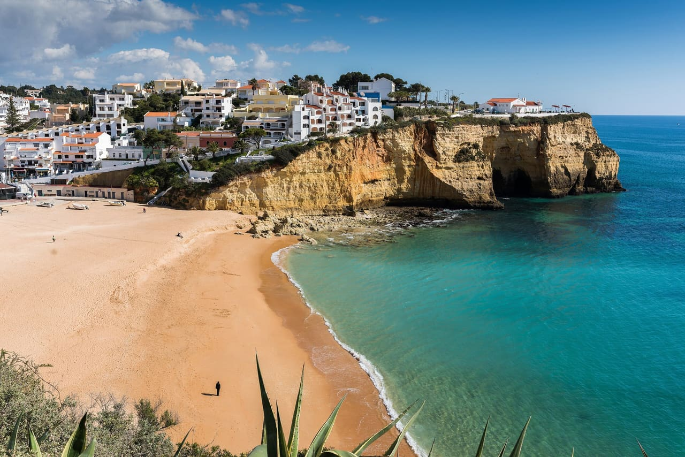
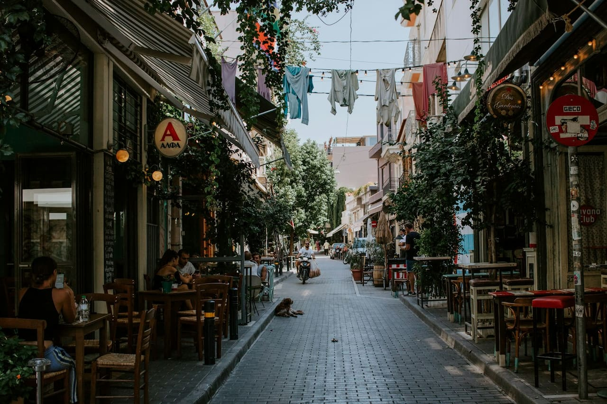
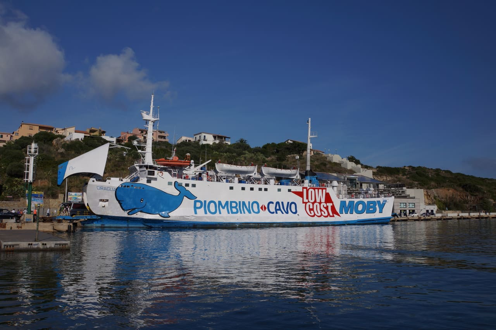
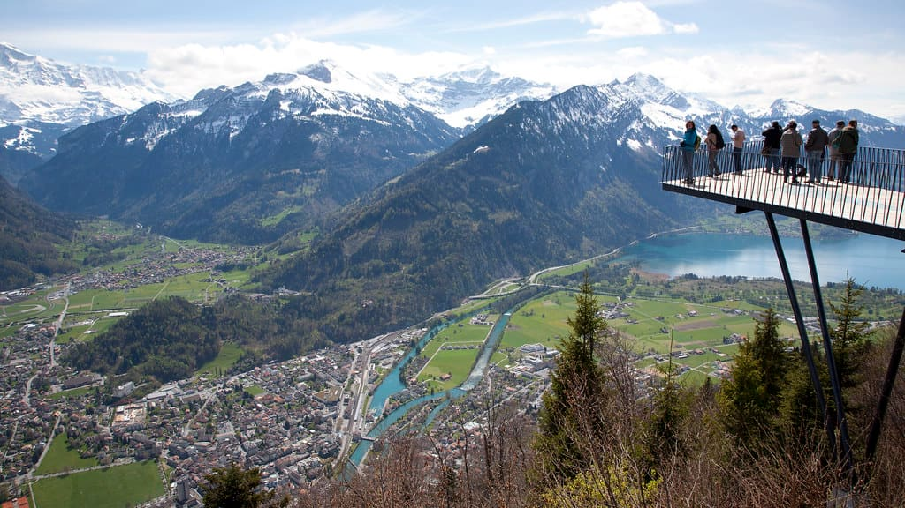
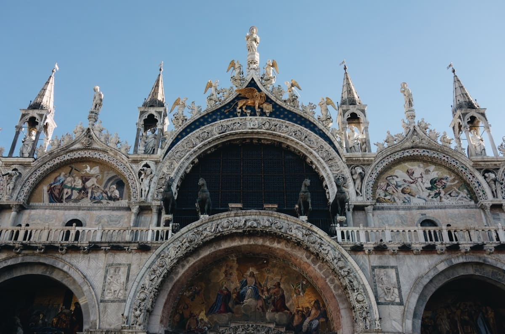

Build-time Trip Composer
Trip Builder
Choose a starting destination, see compatible second legs, and open a complete static draft with dates, transfer logic, estimated budget, and a provisional /50 score.
Start destination
Showing all 26 composed drafts.

Algarve + Mallorca
11nightsComposed review draft joining two reviewed destination legs with an estimated 3/5 transfer-risk rating.
$12.1k–$18.7k
Not audited
Algarve + Malta
11nightsComposed review draft joining two reviewed destination legs with an estimated 4/5 transfer-risk rating.
$11.6k–$17.9k
Not audited
Algarve + Sicily
11nightsComposed review draft joining two reviewed destination legs with an estimated 5/5 transfer-risk rating.
$12.6k–$18.3k
Not audited

Athens + Cyclades + Crete
13nightsComposed review draft joining two reviewed destination legs with an estimated 3/5 transfer-risk rating.
$13.5k–$20.4k
Not audited
Athens + Cyclades + Malta
13nightsComposed review draft joining two reviewed destination legs with an estimated 3/5 transfer-risk rating.
$12.8k–$20k
Not audited

Corsica + Sardinia
11nightsComposed review draft joining two reviewed destination legs with an estimated 3/5 transfer-risk rating.
$11.6k–$18k
Not audited

Kefalonia + Lefkada
11nightsComposed review draft joining two reviewed destination legs with an estimated 3/5 transfer-risk rating.
$11.1k–$17.1k
Not audited

Lisbon + Cascais + Athens + Cyclades
13nightsComposed review draft joining two reviewed destination legs with an estimated 3/5 transfer-risk rating.
$12.6k–$18.9k
Not audited
Lisbon + Cascais + Crete
11nightsComposed review draft joining two reviewed destination legs with an estimated 4/5 transfer-risk rating.
$12.1k–$17.2k
Not audited
Lisbon + Cascais + Mallorca
11nightsComposed review draft joining two reviewed destination legs with an estimated 3/5 transfer-risk rating.
$11.8k–$17.3k
Not audited
Lisbon + Cascais + Malta
11nightsComposed review draft joining two reviewed destination legs with an estimated 4/5 transfer-risk rating.
$11.3k–$16.7k
Not audited
Lisbon + Cascais + Sicily
11nightsComposed review draft joining two reviewed destination legs with an estimated 4/5 transfer-risk rating.
$12.2k–$17k
Not audited

Madeira + Crete
12nightsComposed review draft joining two reviewed destination legs with an estimated 4/5 transfer-risk rating.
$12.8k–$18.8k
Not audited
Madeira + Kefalonia
12nightsComposed review draft joining two reviewed destination legs with an estimated 4/5 transfer-risk rating.
$12.4k–$18.6k
Not audited
Madeira + Mallorca
12nightsComposed review draft joining two reviewed destination legs with an estimated 4/5 transfer-risk rating.
$12.5k–$18.9k
Not audited
Madeira + Malta
11nightsComposed review draft joining two reviewed destination legs with an estimated 5/5 transfer-risk rating.
$11.7k–$17.8k
Not audited
Madeira + Sicily
12nightsComposed review draft joining two reviewed destination legs with an estimated 5/5 transfer-risk rating.
$13k–$18.5k
Not audited

Malta + Sicily
11nightsComposed review draft joining two reviewed destination legs with an estimated 2/5 transfer-risk rating.
$12.2k–$17.8k
Not audited

Sardinia + Corsica
11nightsComposed review draft joining two reviewed destination legs with an estimated 3/5 transfer-risk rating.
$11.6k–$18k
Not audited

Slovenia + Malta
13nightsComposed review draft joining two reviewed destination legs with an estimated 3/5 transfer-risk rating.
$12.4k–$19.1k
Not audited
Slovenia + Sardinia
13nightsComposed review draft joining two reviewed destination legs with an estimated 3/5 transfer-risk rating.
$13.1k–$20k
Not audited

Switzerland + Crete
11nightsComposed review draft joining two reviewed destination legs with an estimated 2/5 transfer-risk rating.
$13k–$19.6k
Not audited
Switzerland + Mallorca
11nightsComposed review draft joining two reviewed destination legs with an estimated 2/5 transfer-risk rating.
$12.8k–$19.8k
Not audited
Switzerland + Sicily
11nightsComposed review draft joining two reviewed destination legs with an estimated 2/5 transfer-risk rating.
$13.2k–$19.3k
Not audited

Venice + Dolomites + Malta
11nightsComposed review draft joining two reviewed destination legs with an estimated 3/5 transfer-risk rating.
$12.4k–$19.2k
Not audited
Venice + Dolomites + Sardinia
13nightsComposed review draft joining two reviewed destination legs with an estimated 3/5 transfer-risk rating.
$13.7k–$21k
Not audited